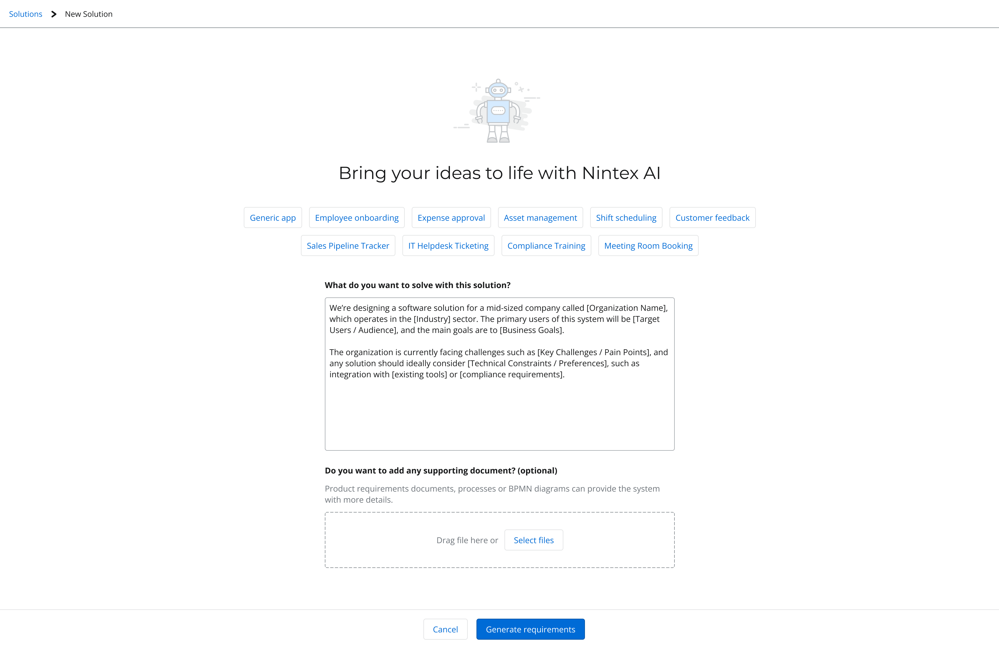
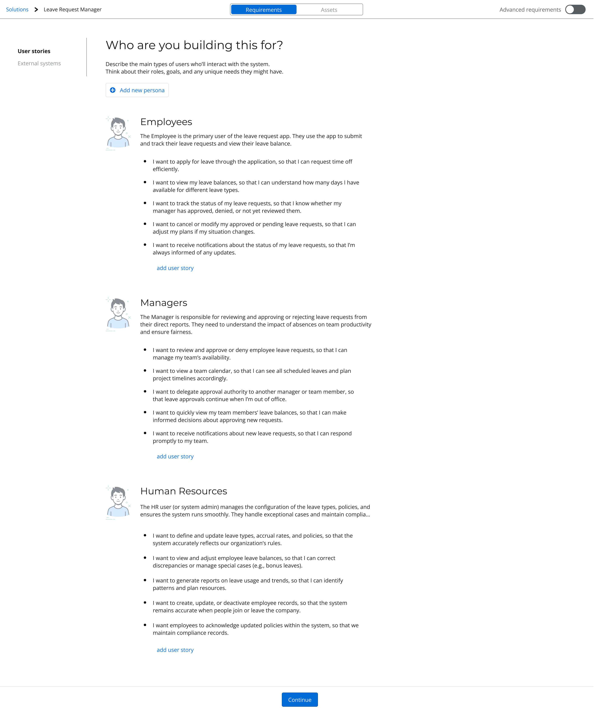
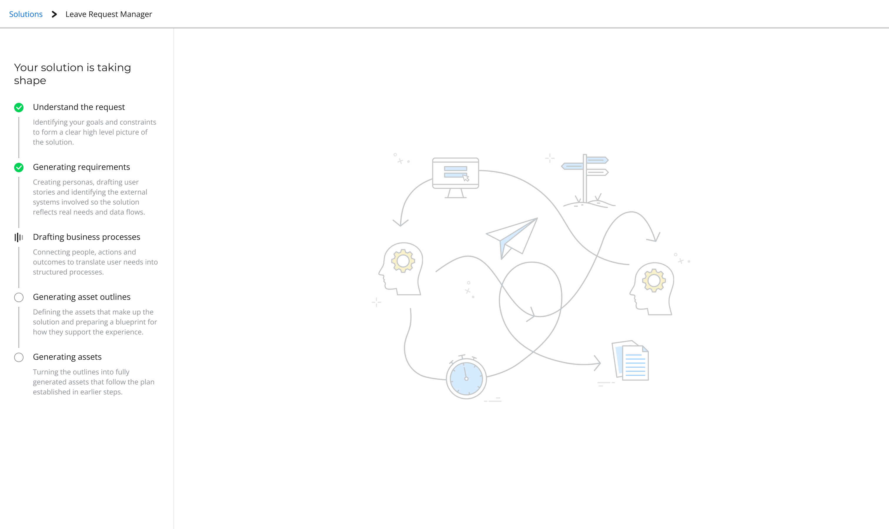
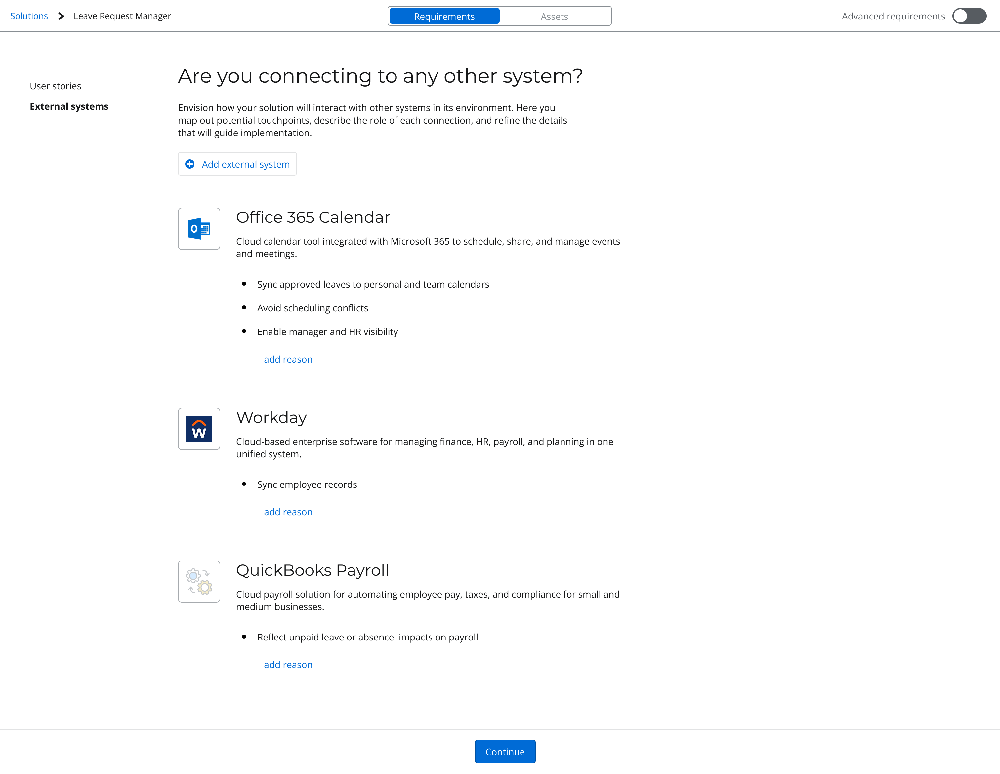
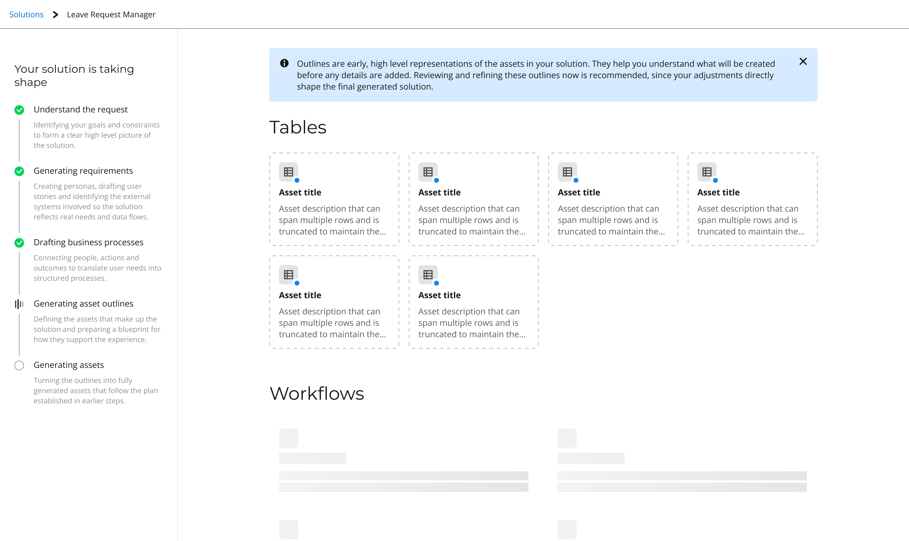

Transforming how businesses build custom AI solutions through strategic design leadership

Skip to all visualsBusinesses were forcing SaaS products to fit their needs instead of getting custom AI solutions. Our platform had all the pieces – Processes, Workflows, Apps, Forms, Data, and Document Generation – but they weren't working together to give AI the business context it needed.
The strategic opportunity: unify six platform capabilities so AI has the business context to build solutions that actually fit
Each mode matches the user's mental state as projects evolve from ambiguous to refined — AI steps back as clarity increases
What I learned about leading AI design: The intersection of AI capabilities and human needs requires constant recalibration. Success came from protecting the team's focus while managing upward to keep stakeholders aligned.
What I'd do differently: Keep the team smaller and more focused from the start. Too many stakeholders got involved too early, making it hard to narrow scope and costing us valuable learning time through mid-development changes. Small, empowered teams with clear decision rights actually move faster.
Design completed under my coaching and direction by a Senior Designer who was promoted to Staff Designer.
AI-powered solution entry point: users describe their business problem in natural language

AI-generated personas and user stories based on business context

Progressive disclosure: showing users where they are in the AI generation process

Platform integration: connecting generated solutions to external systems for real-world implementation

Human-in-the-loop validation: reviewing AI-generated asset outlines before final generation